Sonido profesional
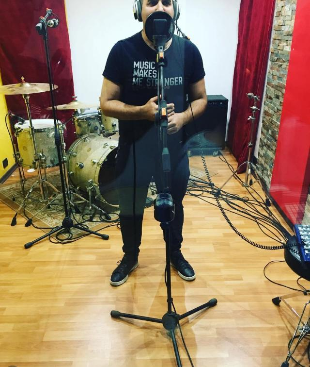
Salas tratadas acústicamente, monitoreo de referencia y cadenas de señal pensadas para que tu grabación suene como suena en vivo, pero mejor.
Nos especializamos en backline, arreglos musicales, sesiones de ensayo, producción musical y más.
Desde el primer ensayo hasta el máster final. Tocás vos, nosotros cuidamos el sonido.

Salas tratadas acústicamente, monitoreo de referencia y cadenas de señal pensadas para que tu grabación suene como suena en vivo, pero mejor.
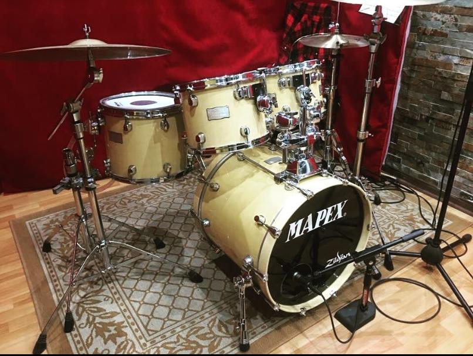
Backline completo para que llegues solo con tus ideas: amplificadores de válvulas, baterías afinadas, teclados, guitarras y bajos listos para tocar.
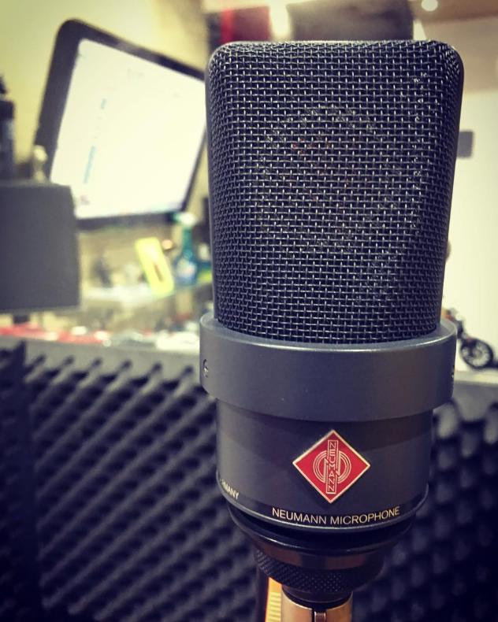
Ingenieros con trayectoria en estudio y en vivo te acompañan en cada toma. Producción, arreglos y edición con criterio musical, no solo técnico.
Microfonía y backline listos para tocar. Lo que ves en las fotos es lo que vas a usar en tu sesión.
Micrófono de condensador de diafragma grande de la casa alemana Neumann, fundada en Berlín en 1928. Sonido claro y detallado, ideal para voces e instrumentos acústicos.
Batería en acabado natural con platillos Zildjian. Sonido cálido y definido, pensada para rock, pop y funk.
Batería con acabado plateado brillante, montada con pedales DW 9000. DW es un fabricante californiano reconocido por su hardware y sus pedales.
Banqueta de baterista con asiento redondo tapizado en negro y costuras rojas, regulable en altura y de base firme.
Platillos de la histórica Zildjian, con origen en Estambul en 1623, montados en las baterías de la sala.
Parches Remo en toms y redoblante, una referencia en estudios por la variedad de sonidos que ofrecen.
Guitarra eléctrica con cuerpo color butterscotch, mástil de arce y pickguard negro. Sonido brillante y directo; un diseño que Fender lanzó a comienzos de los años 50.
Guitarra eléctrica sunburst con diapasón de palisandro y pickguard blanco. Tres micrófonos single coil y un sonido muy versátil; presentada por Fender en 1954.
Instrumentos reales, salas reales y músicos tocando. Hacé clic en cualquier foto para verla en grande.
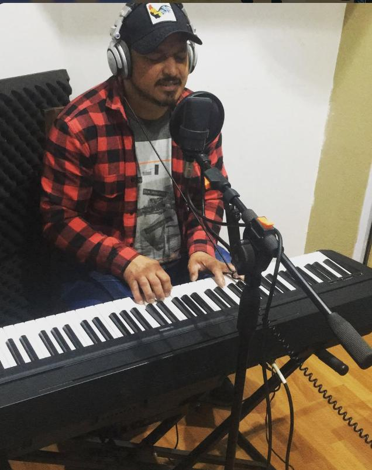
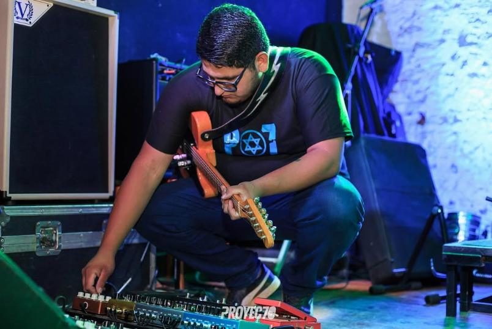
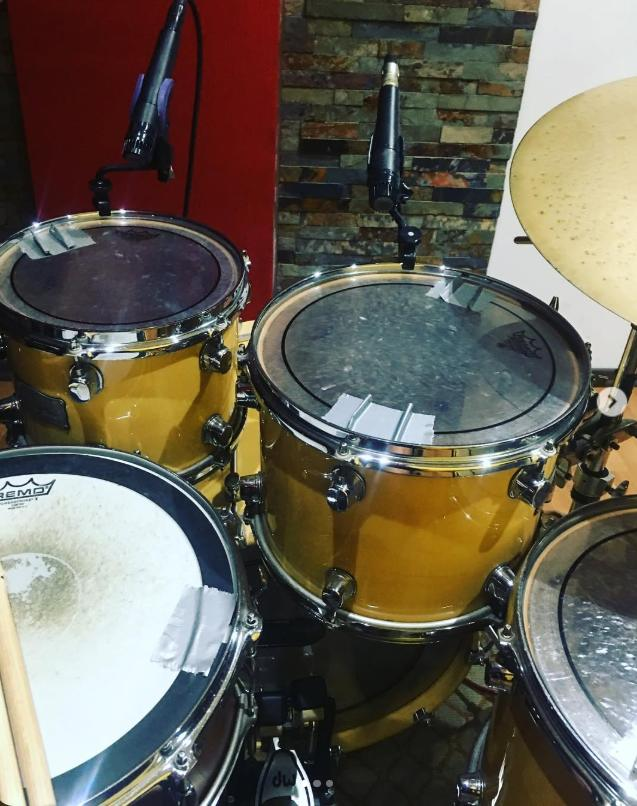
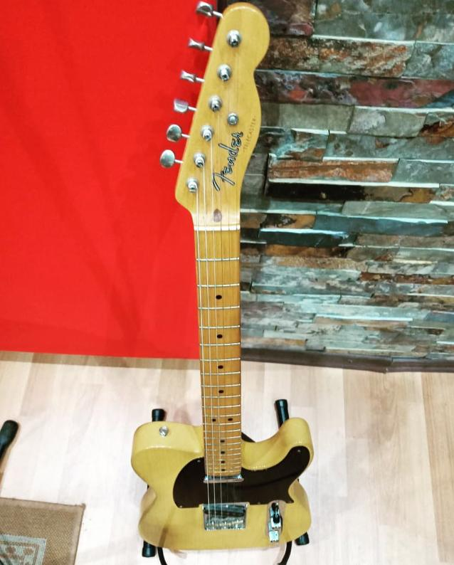
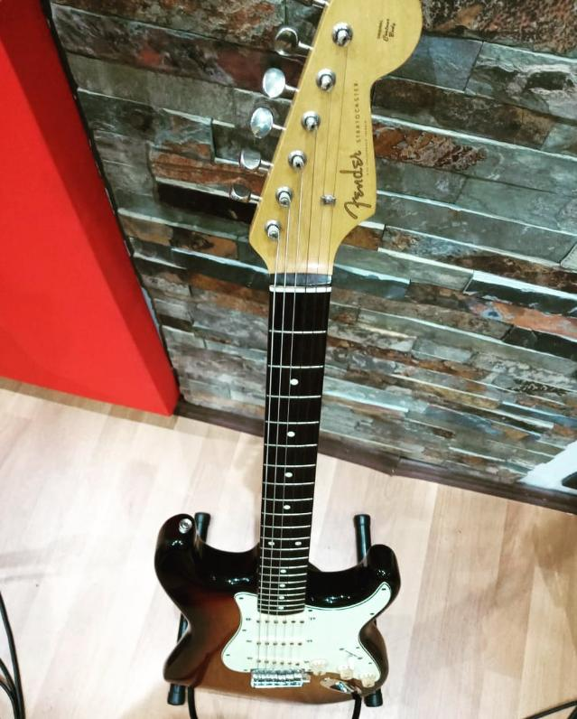
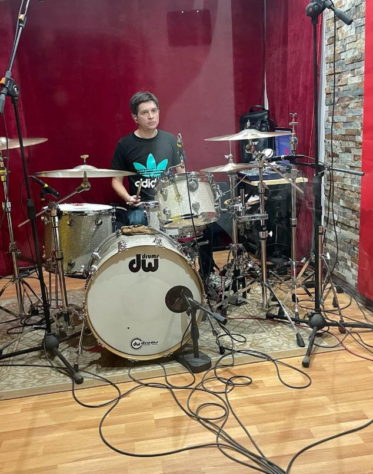
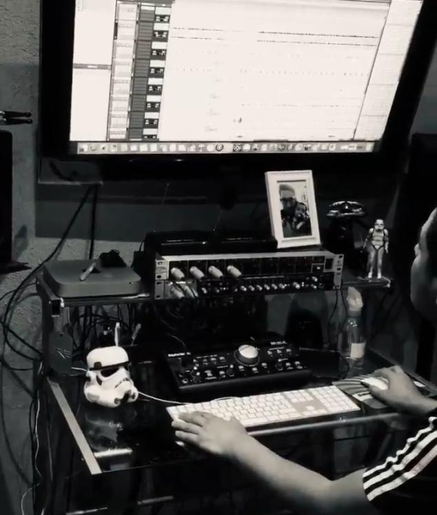
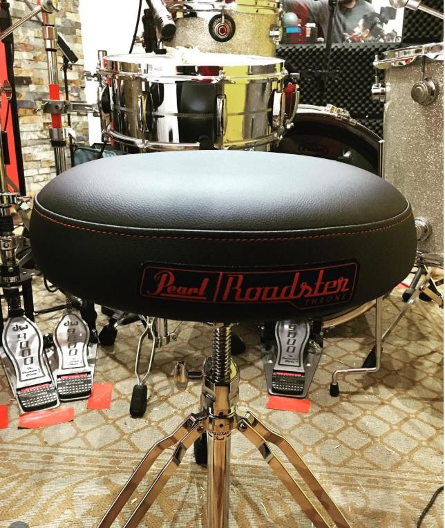
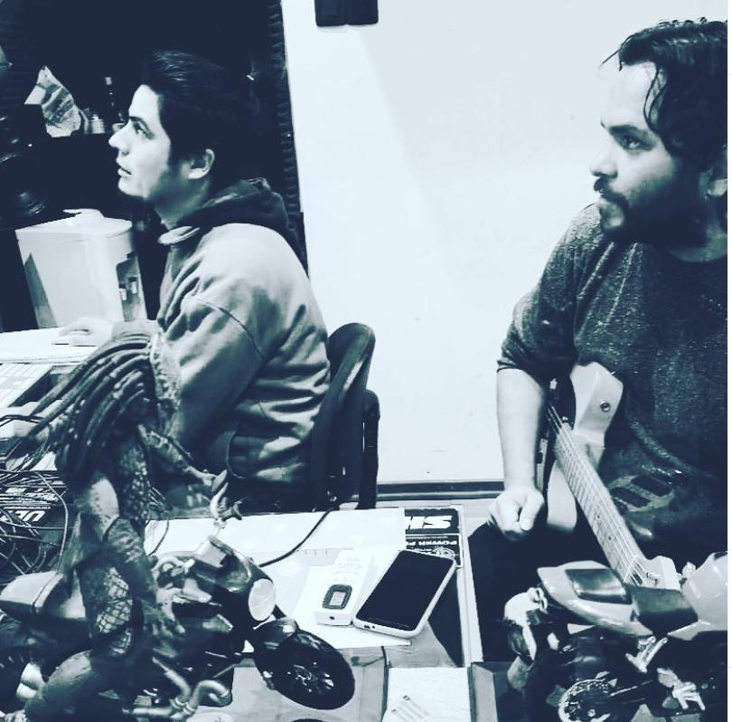
Respondemos en menos de 24 horas, sin costo ni compromiso. Podés reservar una visita a la sala cuando quieras.
Te escribimos pronto a tu email con la cotización.